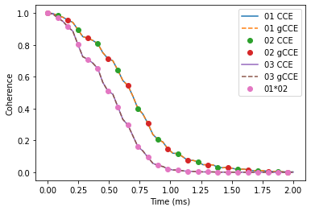
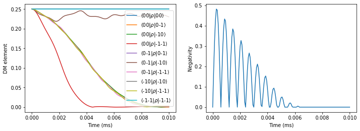
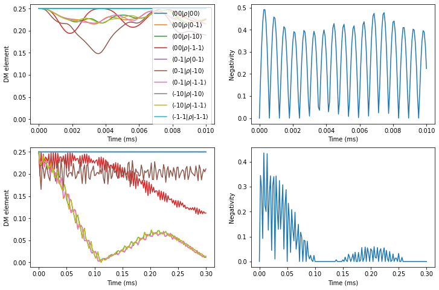
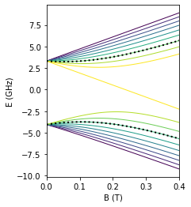
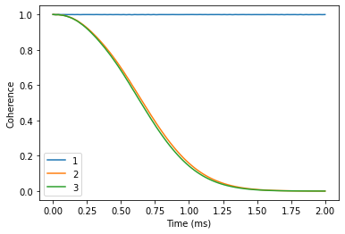
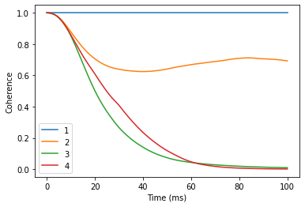

Multiple central spins
Instead of one central spin, the PyCCE can be used to consider the dynamics of N central spins.
Then the central spin Hamiltonian and spin-bath Hamiltonian are written as:
\begin{equation} \hat H_S = \sum_i \mathbf{S_i D_i S_i} + \mathbf{S_i \gamma_{S_i} B} + \sum_{i < j} \mathbf{S_i K_{ij} S_j} \end{equation}
Where \(\mathbf{K_{ij}}\) are interaction tensors between central spins \(i\) and \(j\).
The central spin-bath couplings can be defined as:
\begin{equation} \hat H_{SB} = \sum_{i,l} \mathbf{S_{i} A_{il} I_{l}} \end{equation}
[1]:
!pip install pycce
!pip install ase
import numpy as np
import matplotlib.pyplot as plt
import pandas as pd
import sys
import pycce as pc
import ase
seed = 8805
np.random.seed(seed)
np.set_printoptions(suppress=True, precision=4)
Two NV Centers in Diamond
First example is two NV centers in diamond. We begin by considering two non-interacting electron spins in the nuclear spin bath.
We generate the nuclear \(^{13}\)C spin bath using a well-defined procedure.
[2]:
from ase.build import bulk
# Generate unitcell from ase
diamond = pc.read_ase(bulk('C', 'diamond', cubic=True))
diamond.zdir = [1,1,1]
bath = diamond.gen_supercell(200, seed=seed, remove=('C', [0,0,0]))
Generating the CenterArray object
The properties of the NVs are stored in the CenterArray.
CenterArray object contains the properties of all central spins in the system. In this example, we prepare the array consisting of two electron spin-1, with the same ZFS and gyromagnetic ratio.
[3]:
D = 2.4e6 # in kHz
gyro = pc.ci['e'].gyro # gyromagnetic ratio of electron in rad/G/ms
# Generate an array of two central spins,
# each with the same D and gyromagnetic ratio value,
# separated by 100 nm.
nvs = pc.CenterArray(spin=[1, 1], D=[D, D],
position=[[0, 0, 0], [0, 0, 1000]],
gyro=[gyro, gyro], alpha=0, beta=2)
print(nvs) # Print properties of the central spin array
CenterArray
(s: [1. 1.],
xyz:
[[ 0. 0. 0.]
[ 0. 0. 1000.]],
zfs:
[[[-800000. 0. 0.]
[ 0. -800000. 0.]
[ 0. 0. 1600000.]]
[[-800000. 0. 0.]
[ 0. -800000. 0.]
[ 0. 0. 1600000.]]],
gyro:
[[[-17608.5971 -0. -0. ]
[ -0. -17608.5971 -0. ]
[ -0. -0. -17608.5971]]
[[-17608.5971 -0. -0. ]
[ -0. -17608.5971 -0. ]
[ -0. -0. -17608.5971]]])
You can access the properties of the central spins (and modify them) as items in CenterArray.
[4]:
print(nvs[0], '\n')
nvs[0].gyro = np.random.random((3,3)) * 1000
print(nvs)
nvs[0].gyro = np.eye(3) * pc.ELECTRON_GYRO
Center
(s: 1.0,
xyz:
[0. 0. 0.],
zfs:
[[-800000. 0. 0.]
[ 0. -800000. 0.]
[ 0. 0. 1600000.]],
gyro:
-17608.59705)
CenterArray
(s: [1. 1.],
xyz:
[[ 0. 0. 0.]
[ 0. 0. 1000.]],
zfs:
[[[-800000. 0. 0.]
[ 0. -800000. 0.]
[ 0. 0. 1600000.]]
[[-800000. 0. 0.]
[ 0. -800000. 0.]
[ 0. 0. 1600000.]]],
gyro:
[[[ 989.9394 629.7526 554.6254]
[ 641.9013 943.0174 56.2197]
[ 568.4803 978.1593 265.0863]]
[[-17608.5971 -0. -0. ]
[ -0. -17608.5971 -0. ]
[ -0. -0. -17608.5971]]])
For illustrative purposes, we will use identical nuclear spin environment for two NVs. For that we create a copy of the BathArray, shift it by 1000 angstroms, and concatenate two arrays.
The CenterArray instance is provided as a spin keyword to the Simulator object. It can be later accesed as Simulator.center attribute.
[5]:
bath2 = bath.copy()
bath2.z += 1000
calc = pc.Simulator(spin=nvs, bath=np.concatenate([bath, bath2]),
r_bath=[40, 40], r_dipole=6, order=2, magnetic_field=500)
print(calc)
Simulator for center array of size 2.
magnetic field:
array([ 0., 0., 500.])
Parameters of cluster expansion:
r_bath: [40, 40]
r_dipole: 6
order: 2
Bath consists of 1046 spins.
Clusters include:
1046 clusters of order 1.
836 clusters of order 2.
When the number of central spins is greater than one, hyperfine couplings in the BathArray have an additional dimension, corresponding to the two sets of the hyperfine couplings.
[6]:
print(calc.bath.A.shape)
print(calc.bath[0].A)
(1046, 2, 3, 3)
[[[ 2.3048 1.1078 -0.6608]
[ 1.1078 -1.0451 -0.1988]
[-0.6608 -0.1988 -1.2597]]
[[-0. 0. 0. ]
[ 0. -0. 0. ]
[ 0. 0. 0. ]]]
Decoherence of entangled state
Let’s do some calculations! Note that gcce method in this case includes a lot (9-fold) larger Hilbert space, so it will take a bit longer.
Here we compute the coherence function, defined as a decay of the offdiagonal element of the density matrix:
\begin{equation} L=\langle 0 | \hat \rho | 1 \rangle \end{equation}
Where \(| 0 \rangle\) and \(| 1 \rangle\) are defined as eigenstates of the central spin Hamiltonian introduced above.
[7]:
ts = np.linspace(0, 2)
calc.alpha = 0 # 00 state
calc.beta = 1 # -10 state
cce = {}
gcce = {}
cce['01'] = calc.compute(ts, pulses=1)
gcce['01'] = calc.compute(ts, method='gcce', pulses=1)
calc.beta = 1 # 0-1 state
cce['02'] = calc.compute(ts, pulses=1)
gcce['02'] = calc.compute(ts, method='gcce', pulses=1)
calc.beta = 3 # -1 -1 state
%time cce['03'] = calc.compute(ts, pulses=1)
%time gcce['03'] = calc.compute(ts, method='gcce', pulses=1)
/home/onizhuk/midway/codes_development/pyCCE/pycce/h/functions.py:298: NumbaPerformanceWarning: '@' is faster on contiguous arrays, called on (array(complex128, 2d, A), array(complex128, 2d, A))
hself = vec_tensor_vec(svec, tensor, svec)
/home/onizhuk/midway/codes_development/pyCCE/pycce/h/functions.py:298: NumbaPerformanceWarning: '@' is faster on contiguous arrays, called on (array(complex128, 2d, A), array(complex128, 2d, A))
hself = vec_tensor_vec(svec, tensor, svec)
CPU times: user 1.72 s, sys: 20.3 ms, total: 1.74 s
Wall time: 629 ms
CPU times: user 2min 22s, sys: 1.99 s, total: 2min 24s
Wall time: 24.4 s
As expected, in the case of decoupled NV centers the coherence of the bell state decays as a product of separated NVs decoherence.
[8]:
plt.plot(ts, cce['01'].real, label='01 CCE')
plt.plot(ts, gcce['01'].real, ls='--', label='01 gCCE')
plt.plot(ts, cce['02'].real, markevery=(2, 4), ls='', marker='o', label='02 CCE')
plt.plot(ts, gcce['02'].real, ls='', marker='o', markevery=4, label='02 gCCE')
plt.plot(ts, cce['03'].real, label='03 CCE')
plt.plot(ts, gcce['03'].real, ls='--', label='03 gCCE')
plt.plot(ts, gcce['02'].real * gcce['01'].real, ls='', marker='o', markevery=2, label='01*02')
plt.ylabel('Coherence')
plt.xlabel('Time (ms)')
plt.legend();

Entanglement between two NVs
We can use the PyCCE to predict how the entanglement evolves between two dipolarly coupled electron spins, initially prepared in the product state:
\begin{equation} | \Psi \rangle = \frac{1}{2} (| 0 \rangle + | -1 \rangle) \otimes (| 0 \rangle + | -1 \rangle) \end{equation}
We add interaction between two NVs by calling nvs.point_dipole method, that generates interaction tensors from point dipole approximation. We can also directly set interaction tensors by calling nvs.add_interaction method or modifiying nvs.imap attribute.
[9]:
nvs = pc.CenterArray(spin=[1, 1], D=[D, D],
position=[[0, 0, 0], [0, 0, 50]],
gyro=[gyro, gyro], alpha=0, beta=2)
nvs.point_dipole() # Add interactions
zero = np.array([0, 1, 0])
one = np.array([0, 0, 1])
nvs[0].alpha = zero # Set qubit levels
nvs[0].beta = one
nvs[1].alpha = one
nvs[1].beta = zero
# Generate product state
state = pc.normalize(np.kron(zero + one, zero + one))
nvs.state = state
print("Initial amplitudes in Sz x Sz basis:", np.abs(nvs.state)) # Initial state
print("Interaction tensor:")
print(nvs.imap[0, 1]) # in kHz
Initial amplitudes in Sz x Sz basis: [0. 0. 0. 0. 0.5 0.5 0. 0.5 0.5]
Interaction tensor:
[[ 416.3281 -0. -0. ]
[ -0. 416.3281 -0. ]
[ -0. -0. -832.6562]]
We will use negativity (https://en.wikipedia.org/wiki/Negativity_(quantum_mechanics)) as a metric of entanglement, defined as:
$ \mathcal{N}`(:nbsphinx-math:rho`) \equiv `:nbsphinx-math:frac{||rho^{Gamma_A}||_1-1}{2}`$
[10]:
# 0 1 2 3 4 5 6 7 8
states = ['11', '10', '1-1', '01', '00', '0-1', '-11', '-10', '-1-1']
def pltdm(t, dm, ax):
"""
Function to plot nonzero elements of the density matrix.
"""
for i, j in np.argwhere(np.triu(dm[0])):
label=r'$\langle$' + f'{states[i]}'+r'$|\rho|$'+ f'{states[j]}'+ r'$\rangle$'
ax.plot(t, np.abs(dm[:, i, j]), label=label)
def partial_transpose(dm0, dim, which):
"""
Get partial transpose of the density matrix.
"""
ish = dm0.shape
n = len(dim)
indexes = np.arange(len(dim)*2)
indexes[which] = n + which
indexes[n + which] = which
return dm0.reshape(*dim, *dim).transpose(*indexes).reshape(ish)
def negativities(dms):
"""
Compute negativity for an array of density matrices.
"""
negs = []
for dm in dms:
pt = partial_transpose(dm, [3,3], 0)
tr_norm = np.linalg.norm(pt, ord='nuc')
negs.append((tr_norm - 1) / 2)
return np.array(negs)
def rz(dm):
"""
Set density matrix elements equal to zero at zero timepoint to zero.
Removes numerical instabilities when we divide by a near-zero value.
"""
dm[np.broadcast_to((dm[0] == 0), dm.shape)] = 0
return dm
First, compute the entanglement without dynamical decoupling pulses applied.
[11]:
tfid = np.linspace(0, 0.01, 151)
c = pc.Simulator(nvs, bath=bath, r_bath=40, r_dipole=6,
order=2, pulses=0, magnetic_field=500)
dmfid = rz(c.compute(tfid, method='gcce', fulldm=True))
[12]:
fig, axes = plt.subplots(1, 2, figsize=(12, 4))
pltdm(tfid, dmfid, axes[0])
axes[1].plot(tfid, negativities(dmfid))
axes[0].legend()
axes[0].set(ylabel='DM element', xlabel='Time (ms)')
axes[1].set(ylabel='Negativity', xlabel='Time (ms)');

Compare that to the case, when \(\pi\) pulse is applied to each of the electron spins.
To create such pulse sequence, we specify the which keyword argument of the Pulse class with indexes of both NVs in the CenterArray.
[13]:
# Pulse, flipping simultaneously the two NVs
p = pc.Pulse('x', np.pi, which=[0, 1])
the = np.linspace(0, 0.3, 151)
c = pc.Simulator(nvs, bath=bath, r_bath=40, r_dipole=6,
order=2, pulses=[p], magnetic_field=500)
dm_short = rz(c.compute(tfid, method='gcce', fulldm=True))
dm = rz(c.compute(the, method='gcce', fulldm=True))
As expected, we find a significantly prolonged entanglement between two electron spins.
[14]:
fig, axes = plt.subplots(2, 2, figsize=(12, 8))
pltdm(tfid, dm_short, axes[0, 0])
axes[0, 1].plot(tfid, negativities(dm_short))
pltdm(the, dm, axes[1, 0])
axes[1, 1].plot(the, negativities(dm))
axes[0, 0].legend()
for row in axes:
row[0].set(ylabel='DM element', xlabel='Time (ms)', ylim=(-0.01, 0.26))
row[1].set(ylabel='Negativity', xlabel='Time (ms)')

Si:Bi donor
We use the PyCCE framework to reproduce paper: PHYSICAL REVIEW B 91, 245416 (2015) by S. J. Balian et al. Here, \(^{209}\)Bi nuclear spin 9/2 and electron spin 1/2 interact very strongly (~1.5 GHz hyperfine), with many avoided crossings arising and leading to clock transitions. The qubit states is chosen as a two energy levels of the hybrid electron and nuclear spins system.
First, we prepare a CenterArray, containing the properties of two central spins.
[15]:
aiso = 1.4754e6
im = np.eye(3) * aiso # Isotropic interaction tensor
ebi = pc.CenterArray(spin=[1/2, 9/2],
gyro=[pc.ci['e'].gyro, pc.ci['209Bi'].gyro],
imap=im, alpha=6, beta=13)
For visualization purposes, plot a diagram of the energies of the hybrid system as a function of magnetic field. Here the chosen qubit levels are highlighted with black points.
[16]:
ens = []
ms = np.linspace(0, 4000, 51) # applied magnetic field
for mf in ms:
ebi.generate_states([0,0, mf])
ens.append(ebi.energies)
ens = np.asarray(ens)
lowerdf = pd.DataFrame(ens[:, :10]/1e6, index=ms/1e4,
columns=np.arange(10))
higherdf = pd.DataFrame(ens[:, :10:-1]/1e6, index=ms/1e4,
columns=np.arange(11, ens.shape[1])[::-1])
fig, ax = plt.subplots(figsize=(3, 4))
lowerdf.plot(ax=ax, cmap='viridis', legend=False, lw=1)
higherdf.plot(ax=ax, cmap='viridis', legend=False, lw=1)
lowerdf[6].plot(ax=ax, color='black', ls=':', lw=2)
higherdf[13].plot(ax=ax, color='black', ls=':', lw=2)
ax.set(xlabel='B (T)', ylabel='E (GHz)', xlim=(0, 0.4));

Now we define the calculations of hyperfine couplings for the electron spin.
[17]:
# PHYSICAL REVIEW B 68, 115322 (2003)
# https://link.springer.com/content/pdf/10.1007%2FBF02725533.pdf for Bi
n_parameter = np.sqrt(0.029/0.069)
# https://journals.aps.org/pr/pdf/10.1103/PhysRev.114.1219
a_parameter = 25.09
def factor(x, y, z, n=n_parameter, a=a_parameter, b=14.43):
top = np.exp(-np.sqrt(x ** 2 / (n * b) **2 + (y ** 2 + z ** 2) / (n * a) ** 2))
bottom = np.sqrt(np.pi * (n * a) ** 2 * (n * b) )
return top / bottom
def contact_si(r, gamma_n, gamma_e=pc.ELECTRON_GYRO,
a_lattice=5.43, nu=186, n=n_parameter,
a=a_parameter, b=14.43):
k0 = 0.85 * 2 * np.pi / a_lattice
pre = 8 / 9 * gamma_n * gamma_e * pc.HBAR_MU0_O4PI * nu
xpart = factor(r[0], r[1], r[2], n=n, a=a, b=b) * np.cos(k0 * r[0])
ypart = factor(r[1], r[2], r[0], n=n, a=a, b=b) * np.cos(k0 * r[1])
zpart = factor(r[2], r[0], r[1], n=n, a=a, b=b) * np.cos(k0 * r[2])
return pre * (xpart + ypart + zpart) ** 2
def func(bath):
na = np.newaxis
aiso = contact_si(bath.xyz.T, bath.gyro) # Contact term
# Generate dipolar terms
bath.from_center(ebi)
# Add contact term for electron spni
bath.A[:, 0] += np.eye(3)[na, :, :] * aiso[:, na, na]
And prepare the spin bath using ase interface.
[18]:
si = pc.read_ase(bulk('Si', cubic=True))
atoms = si.gen_supercell(200, remove=('Si', [0., 0, 0]), seed=seed)
Away from avoided crossings
Chosen energy levels 6 <-> 14 give raise to the clock transition (CT) at ~800 G. First compute the coherence avay from CT at 3200 G. It will take some time, as the bath is large.
[19]:
nts = np.linspace(0, 2, 101)
sicalc = pc.Simulator(ebi, bath=atoms, r_bath=80, r_dipole=6,
order=2, magnetic_field=3200, pulses=1,
hyperfine=func)
orders = [1, 2, 3]
ls = []
for v in orders:
sicalc.order = v
ls.append(sicalc.compute(nts).real)
dfoff = pd.DataFrame(ls, columns=nts, index=orders).T
[20]:
dfoff.plot()
plt.xlabel('Time (ms)')
plt.ylabel('Coherence');

Near avoided crossings
Now compare that to the coherence near the CT ( -4G from CT). Note, that number of clusters considered here is already rather large, so the calculations will take a minute or two.
[21]:
ts = np.linspace(0, 100, 101)
sicalc.magnetic_field = 791
orders = [1, 2, 3, 4]
ls = []
for v in orders:
sicalc.order = v
ls.append(sicalc.compute(ts).real)
dfat = pd.DataFrame(ls, columns=ts, index=orders).T
[22]:
dfat.plot()
plt.xlabel('Time (ms)')
plt.ylabel('Coherence');

Exactly at CT one needs even higher order, larger r_bath and r_dipole, and random bath state sampling to get accurate results. It is left as an exersize to the reader to try and converge the coherence at clock transition.